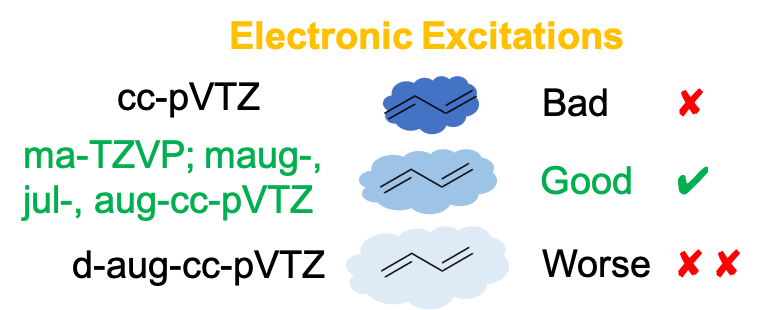
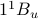
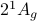
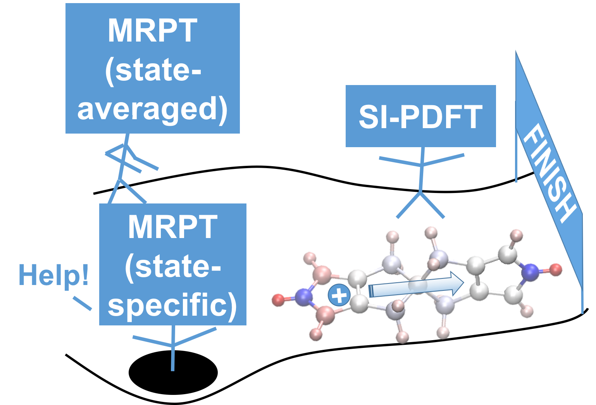
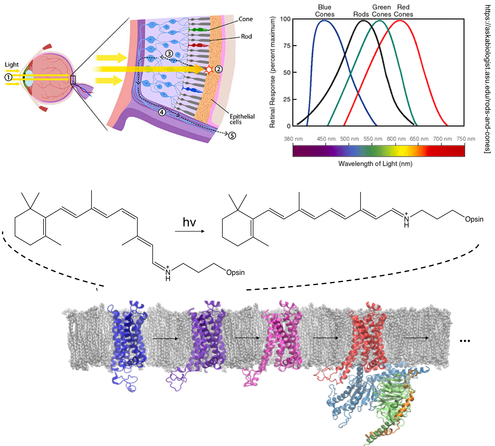
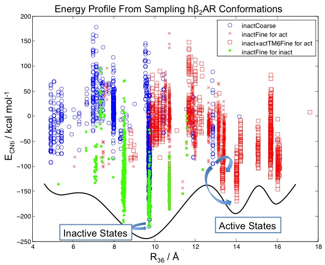
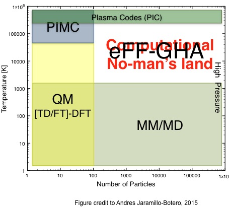

|
Research
Machine Learning for Materials Simulations
Stay tuned…
Automatic Active Space Selection
|
|
Multireference (strongly correlated) systems are ubiquitous in nature and in new generations of materials. To study multireference systems, it is common to use multiconfigurational methods. However, the procedure for selecting an active space for the wave functions of multiconfigurational methods is often nonsystematic. We have developed several approaches to systematically select the active space to generate reasonable reference wave functions for multiconfiguration pair-density functional theory to accurately predict the excited states of various molecules.
Jie J. Bao, Sijia S. Dong, Laura Gagliardi, and Donald G. Truhlar. Automatic Selection of an Active Space for Calculating Electronic Excitation Spectra by MS-CASPT2 or MC-PDFT. J. Chem. Theory Comput., 2018, 14 (4), 2017–2025. (Link)
Sijia S. Dong, Laura Gagliardi, Donald G. Truhlar. Excitation Spectra of Retinal by Multiconfiguration Pair-Density Functional Theory. Phys. Chem. Chem. Phys., 2018, 20, 7265-7276. (Link)
|
Excited States of Molecules and Materials
The correct description of the excited states of chemical systems is critical for understanding and designing light-harvesting molecules and materials. However, many such systems are multireference (strongly-correlated) in nature, and the widely used Kohn-Sham density functional theory (KS-DFT) cannot describe such systems well. Here, we use multiconfiguration pair-density functional theory (MC-PDFT) and other electronic structure methods to study the photochemistry of biomolecules and building blocks of functional materials.
|
 |
Conjugated organic molecules comprise a large class of molecules that play important roles in nature and in chemical applications such as photosynthesis, vision, light-driven molecular motors, and organic electronics. Butadiene is the simplest case of a conjugated organic molecule, and has been studied extensively. However, the inferences about the nature of its lowest excited states were still inconclusive. In this work, we resolve this issue. We demonstrate that a combined analysis of the orbital second moments, state second moments, and MC-PDFT energy components is a very useful approach in determining excited-state characteristics and assigning states, and we show that the level of diffuseness of basis sets that should be used follows a Goldilocks principle.
Sijia S. Dong, Laura Gagliardi, Donald G. Truhlar. Nature of the  and  Excited States of Butadiene and the Goldilocks Principle of Basis Set Diffuseness. J. Chem. Theory Comput., 2019, 15, 8, 4591-4601. (Link)
|
|
 |
Charge transfer (CT) is a common chemical phenomenon and is critical in modern technology. Among CT systems, mixed-valence compounds with strong couplings between electronic states are one of the most challenging types for electronic structure theory. We show that the state-interaction (SI) flavor of MC-PDFT is free from the unphysical behavior of previously tested second-order multireference perturbation theory methods (MRPT2, a class of commonly-used multireference methods that are much more computationally expensive) for a prototype mixed-valence compound near the avoided crossing. This is very encouraging because of the much lower cost in applying SI-PDFT to large or complex systems.
Sijia S. Dong*, Benchen Huang*, Laura Gagliardi, Donald G. Truhlar. State-Interaction Pair-Density Functional Theory Can Accurately Describe a Spiro Mixed-Valence Compound. J. Phys. Chem. A, 2019, 123, 10, 2100-2106. (Published as part of The Journal of Physical Chemistry virtual special issue “Leo Radom Festschrift”.) (Link)
|
|
 |
The retinal molecule has been an important prototype target of photochemistry research for decades. It is covalently bound to a type of G protein-coupled receptors (GPCRs), opsins, which are responsible for vision. The retinal ligand undergoes cis-trans isomerization upon light, which triggers conformational changes in the opsin protein from the “inactive state” to the “active state”. The activated opsin is involved in signal transduction in cells, which is eventually transformed into visual signals in brains.
The absorption maximum of retinal is sensitive to the mutations in the protein. Therefore, it is essential to predict the absorption spectrum of retinal accurately. However, the presence of charge transfer excitations in this molecule and its analogues poses a challenge for KS-DFT, and the large size of the molecule makes multiconfigurational perturbation theory methods expensive. We have demonstrated that MC-PDFT provides an efficient way in predicting the vertical excitation energies of retinals. With this tool, we will be able to understand and design other chromophores important for biological and energy research.
Sijia S. Dong, Laura Gagliardi, Donald G. Truhlar. Excitation Spectra of Retinal by Multiconfiguration Pair-Density Functional Theory. Phys. Chem. Chem. Phys., 2018, 20, 7265-7276. (Link)
María del Carmen Marín, Luca De Vico, Sijia S. Dong, Laura Gagliardi, Donald G. Truhlar, Massimo Olivucci. Assessment of MC-PDFT Excitation Energies for a Set of QM/MM Models of Rhodopsins. J. Chem. Theory Comput., 2019, 15, 3, 1915-1923. (Link)
|
Protein Structure Prediction
G protein-coupled receptors play critical signaling functions for numerous cellular processes, making important targets for therapeutics. About 40% of drugs on the market target on these membrane proteins. However, developing such therapeutics is complicated because the activation of GPCRs that is integral to their function involves multiple distinct conformations along the pathway for activation, and obtaining these conformations experimentally is challenging.
|
 |
To address this challenge, we developed a computational methodology, ActiveGEnSeMBLE, to sample and predict from first principles the multiple conformations along the activation coordinates of GPCRs. We select a handful of candidate conformations from trillions of possible conformations. We then subjected the predicted structures to molecular dynamics simulations and obtained a quantitative energy landscape that provides insights to GPCRs’ activation mechanisms not easily accessible by experiments. It was, we believe, the first quantitative energy profile for GPCR activation consistent with the qualitative profile deduced from experiments. We have applied the method to a GPCR without an experimental structure and have made experimentally testable hypotheses for drug discovery.
|
Sijia S. Dong, William A. Goddard III, Ravinder Abrol. Identifying Multiple Active Conformations in the G Protein-Coupled Receptor Activation Landscape Using Computational Methods. In Methods in Cell Biology. 2017; vol. 142, pp. 173-186.(Link)
Sijia S. Dong, William A. Goddard III, Ravinder Abrol. Conformational and Thermodynamic Landscape of GPCR Activation From Theory and Computation. Biophys. J., 2016, 110 (12), 2618-2629. (Link)
Sijia S. Dong, Ravinder Abrol, William A. Goddard III. The Predicted Ensemble of Low Energy Conformations of Human Somatostatin Receptor Subtype 5 and the Binding of Antagonists. ChemMedChem, 2015, 10 (4), 650–661. (Link)
Large-Scale Non-Adiabatic Electron Dynamics
|
 |
We develop a model, Gaussian Hartree Approximated Quantum Mechanics (GHA-QM) With Angular Momentum Projected Effective coRe potEntial (AMPERE), for doing non-adiabatic electron dynamics. GHA-QM is based on the electron force field (eFF) concept, which solves the time-dependent Schrödinger equation with the electrons approximated as Gaussian wavepackets and nuclei point charges. An introduction to eFF is here. The eFF method has been applied to modeling systems and processes involving excited electron dynamics such as warm dense hydrogen, Auger process in hydrocarbon nanoparticles, and electronic effects in brittle fracture of silicon.
|
Hai Xiao, Sijia S. Dong, Andres Jaramillo-Botero, William A. Goddard III. Large-Scale Quantum Non-Adiabatic Electron Dynamics Using Gaussian Hartree Approximated Quantum Mechanics With Angular Momentum Projected Effective Core Potential. In preparation.
|